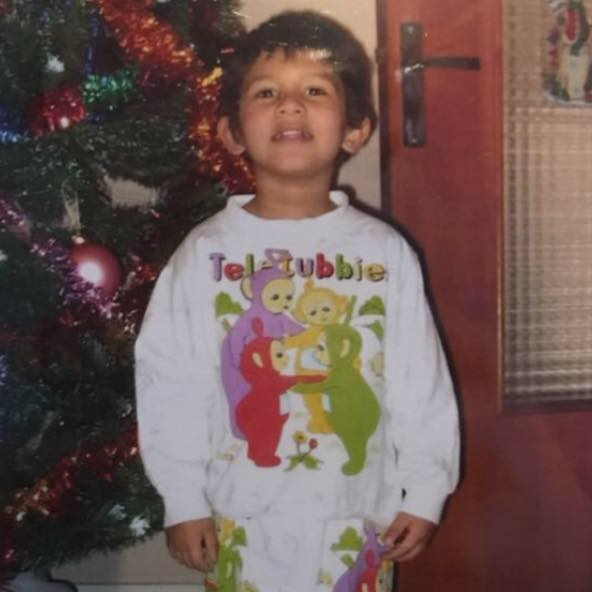

Hi I'm Shaun
I am a BBA first year student. I love Classical Literature, Animals (espacially my dog) and traveling around the world 🌍.
🐘 Animals 🐘
I am Passionate about animals and here are some of my favorite animals.


📖 Books 📖
I love writing and here are the first lines of my new novel "Je nourris l’ambition incertaine de faire naître au creux de ces pages une entreprise qui n’eut précédant : réaliser l’examen quotidien de mon cœur et de mon esprit. Le souhait que je formule c’est que l’encre sur ce papier puisse être le reflet de ma vision désabusée. Bien plus que cela ce carnet chantera ma peine et ma douleur, interrogera mes pensées les plus sombres et mes cicatrices les plus profondes. Mais avant toute chose il faut un titre. Je lève les yeux et la réponse se dresse face à moi comme un colosse. Ce sera donc le Bureau du Sourire, il le fallait bien. Après tout il n’y a plus que ça aujourd’hui. "
🎬 Anime 🎬
I really love Anime what about you..? Here is a quick test, if you recognize the opening I'll consider you as a true otaku 🔥🔥🔥